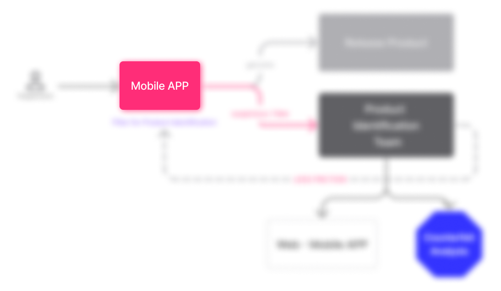
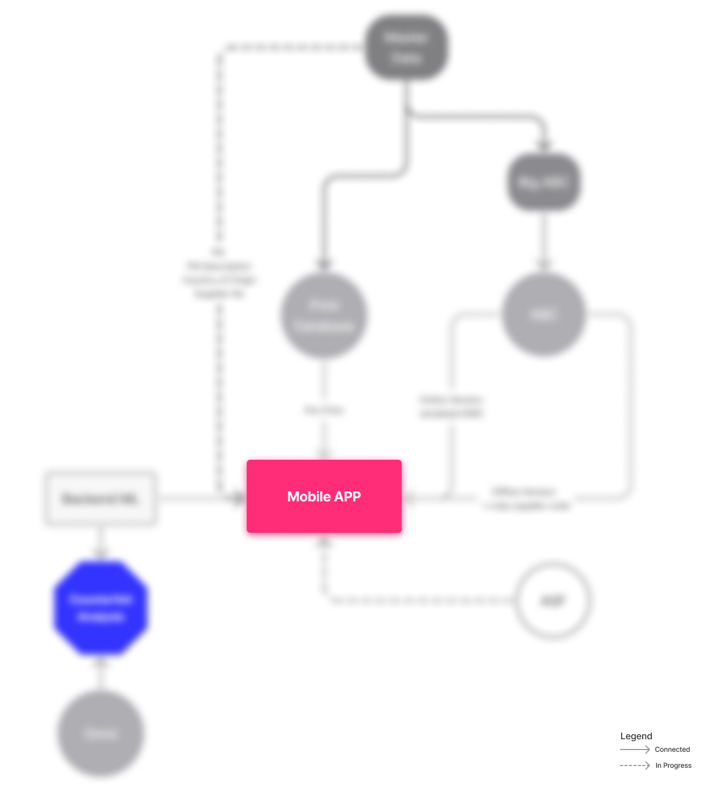
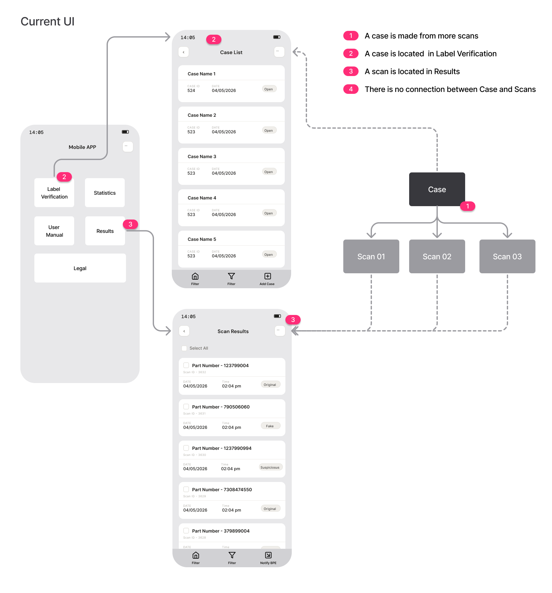
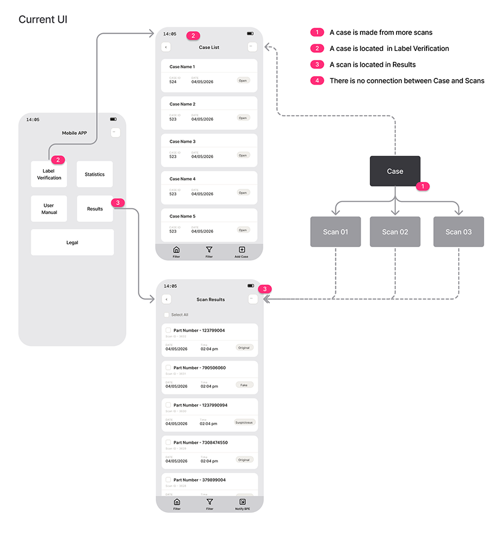
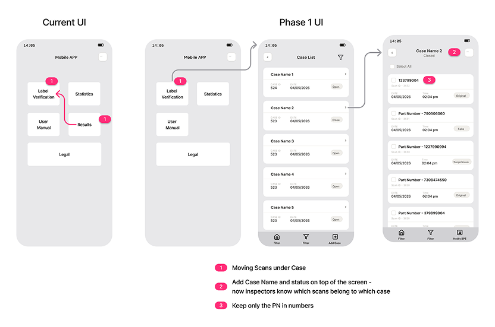

Background
Background
This is a global authentication initiative protecting billions in annual supply chain value.
The system includes a Mobile App used by field inspectors, a web platform for the identification team, and Counterfeit Analysis—an ML-powered tool that detects counterfeit products from uploaded photos.
My work:
- Drive product evolution of the counterfeit detection ecosystem.
- Identify system gaps between operational reality and technical assumptions.
- Define integration strategy across ML systems, rule engines, and enterprise databases.
- Coordinate vendor evaluation and technical feasibility discussions.
- Redesign workflows and UX based on field-user behaviour.
- Prioritize phased delivery under budget and organizational constraints.
- Align stakeholders across IT, Legal, Logistics, and Product teams.
The team includes compliance, legal, technical, and operational stakeholders. Together, we're protecting global markets.
Strategy
Reduce Friction, Increase Impact
The strategy is to reduce friction in the field application so teams can verify more products, allowing the field application to filter genuine products at scale while the identification team focuses only on high-risk counterfeit cases.
Result: Higher volume from the field. Better signal from the desk.

!Full strategy is included in the protected case study (password-protected for confidentiality).
System
The Counterfeit Detection System: How All System Connect
System Architecture: The mobile detection platform integrates 6+ data sources and operational systems.
Key Challenge: coordinating complex integrations across organisational boundaries while maintaining a single, unified user experience.

!Full technical architecture and system details are included in the protected case study (password-protected for confidentiality).
Mobile APP
Mobile APP Functionality
Verify products, identify inconsistencies instantly. The system filters genuine items from suspicious ones, so your team focuses only on real threats—protecting billions in supply chain value.

Challenges
- Detection engine built on false assumption: Expected all labels to have unique serialisation codes. In reality, 70% of supply chain lacks this data.
- System fragmentation: Mobile app isolated from authoritative product database; only 30% data access.
- UX friction: Users complained app was "too slow," "too complex," "not intuitive"—eroding trust.
- Organisational blockers: Vendor coordination impossible without contracts; escalations hit limits.
Solutions
- System 1: Connect app directly to authoritative product database → expand validation from 30% to 70%+ coverage.
- System 2 layer: Add encryption as alternative authentication (independent of serialisation).
- Phased UX redesign: Phase 1 (quick wins: clearer hierarchy, missing actions). Phase 2 (full simplification—ship within budget constraints).
- Stakeholder alignment: Mapped hidden stakeholders; ran workshops to align on changes.
Mobile APP: Detection Engine
Detection Engine build on incomplete assumptions
Detection Engine "Perfect Life"
The detection engine was built on an assumption: that complete product identification data would be universally available across the supply chain.
Detection Engine "Real Life"
Legacy products:
Many items in circulation lack modern identification markers.
Inconsistent adoption:
Even when identification systems exist, implementation varies.
Data availability gaps:
Significant portions of the supply chain lack complete data.
Why the original approach failed
When I took over, this challenge had been identified by my predecessor. The initial strategy was to pull comprehensive product data from the identification system.
However, investigation revealed the system only generates codes—it doesn't store product information. The strategy was based on false assumptions about system capabilities.
During stakeholder alignment sessions, the operations team suggested connecting directly to the master reference database instead—the actual authoritative source.
Lessons
Don't assume what systems can do. Investigate the actual capabilities.
!For a comprehensive understanding of how the detection engine limitation was diagnosed and managed, including the technical investigation and stakeholder discovery process, please refer to the protected case study.
Mobile APP: UX Audit
From User Feedback to UX Audit to Clarity
During my early months, I discovered previous user research that hadn't been acted upon. I conducted a comprehensive UX audit.
The diagnosis was clear. Implementation proved harder.
Users' Response
- Interface Not Intuitive
- Excessive information on screen
- Workflow too lengthy and time-consuming
- Reliability concerns (confirming detection engine issues)
UX Audit
- Main screen overwhelmed with features: 7+ information categories with no clear hierarchy. The core goal was to analyze as many items as possible, but the interface gave equal weight to all features.
- Disconnected information: Product data and analysis results were in separate sections with no visual connection—users couldn't trace which results matched which products.
- Redundant navigation: Workflows required unnecessary steps and confirmation screens.
- Missing resolution action: The completion action was buried in an optional initial step—resulting in unresolved cases piling up.
Simplifying the Workflow
My redesign focused on streamlining the analysis process and reducing complexity.

!For a comprehensive understanding of how the detection engine limitation was diagnosed and managed, including the technical investigation and stakeholder discovery process, please refer to the protected case study.
UI: From Complexity to Clarity
Constrains I am working within:
Budget:
given to this constrain, I design a 2-phase UX rollout.
Team Lead resistance:
Initially said UX was fine, app didn't need "fancy UI"
My response:
Showed user survey data, framed as usability not aesthetics
Result:
Agreed to 2-phase UX rollout.


!For detailed before/after comparisons, wireframe progression (Phase 1 and Phase 2 designs), and user testing results, please refer to the protected case study.
Additional Security
Managing External Vendor Coordination
Additional Security Feature: Building Defence-in-Debt
ASF is an encryption solution being integrated to add invisible security markers to labels.
ASF will be integrated into the Mobile APP, allowing field inspectors to use encryption-based authentication alongside the existing validation system when scanning labels.
Third-Party Integration Constraints
Implementing the encryption solution required coordinating between multiple external vendors. Organisational policy required formal governance structures rather than direct vendor communication, creating workflow constraints.
How I Managed It
I accepted the organisational constraint and adapted:
- Documented all technical questions clearly to minimise misunderstandings
- Tracked feasibility blockers explicitly so leadership owned the delay decision
- Focused my energy on parallel work-streams: maintained momentum on Master Data integration and UX redesign (independent initiatives)
- Kept the project moving despite the vendor coordination limitation
Key Learning: Not all blockers are solvable by individual PMs. Some require leadership decisions. My job was to make constraints visible, propose solutions, and execute within the boundaries leadership set.
!Complete vendor coordination timeline and technical feasibility assessments are documented in the protected case study.
Measurements
Timeline & Measurements
Current Implementation Status:
- Master Data Integration: In progress (expected Q2 2026)
- UX Redesign Phase 1: In user testing (Phase 2 decision pending Phase 1 results)
- Encryption Layer: Technical feasibility review in progress (decision expected Q2 2026)
- ML Verification: MVP Go Live (expected Q3 2026)
Business Context
The system protects billions in annual supply chain value. Current impact: significant detection gaps due to data fragmentation.
Matrix Being Tracked
- User Efficiency: Analysis volume per team member (baseline establishing → target improvement through simplified workflow)
- Detection Capability: Expected improvement from data integration (50%+) and encryption layer (90%+ for secured products)
- Quality vs. Volume: Trade-off analysis—encryption verification adds process step but improves accuracy; UX simplification maintains overall efficiency
Timeline
- Q2 2026Data integration ships + Phase 1 UX results validated
- Q2/Q3 2026Encryption layer technical decision → integration planning
- Q3 2026ML verification tool launch
- Q1 2027Encryption layer deployment
- Q2 2027Full impact measurement across all initiatives
!Detailed business impact metrics, measurement methodology, and expected outcomes are documented in the protected case study.
Insights
Key Product Insight
The core challenge was not model capability alone, but the mismatch between system assumptions and real-world operational conditions.
Improving detection required rethinking data availability, workflow design, integration architecture, and organizational coordination together — not as isolated technical problems.
!To respect confidentiality constraints, this case study presents a generalized version of the project. A full in-depth version is available for recruiters and hiring managers upon request.